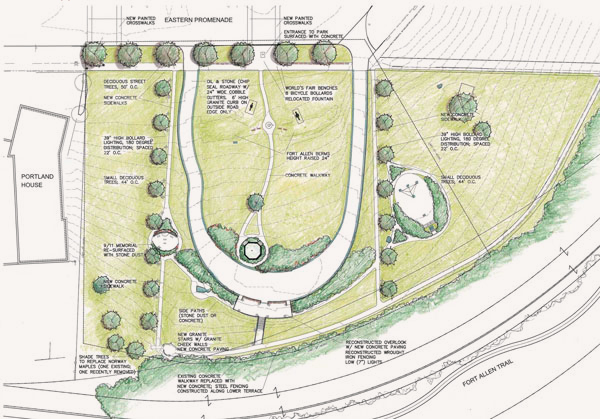
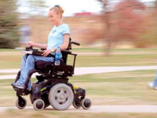

Трудно представить удобный поселок без продуманных дорог и парковок. В Зеландии мы сделали всё, чтобы учесть различные сценарии использования дорог: от приезда скорой, пожарной, мусороуборочной машин до проведения дня рождения с большим количеством гостей и повседневного использования молодыми мамами, старшим поколением и инвалидами на колясках.
Мы спроектировали максимально комфортные дороги для жизни и отдыха.
Ширина асфальтированной части — 6 метров. Это позволяет спокойно разъехаться двум большегрузным машинам, и парковаться прямо на дороге, не мешая при этом проезду других машин.
Специальные пешеходные зоны
Ширина прогулочной пешеходной дороги — 1,5 метра. Такой ширины достаточно, чтобы могли разъехаться 2 мамы с колясками, едущими на встречу друг другу. В скверах ширина дорог еще больше — целых 2—2,5 метра, что позволяет гулять пешком, заниматься бегом, ездой на велосипеде и не мешать при этом друг другу.
Все тротуары и дорожки рассчитаны под удобное передвижение по ним инвалидных и детских колясок. Поэтому тротуары находятся всегда на одном и том же уровне, что позволяет беспрепятственно перемещаться по прогулочным дорожкам внутри поселка. В местах где есть съезды на пешеходный переход, тротуар имеет плавное понижение уровня. Ширина прогулочной пешеходной дороги — 1,5 метра. Такой ширины достаточно, чтобы могли разъехаться 2 мамы с колясками, едущими на встречу друг другу. В скверах ширина дорог еще больше — целых 2—2,5 метра, что позволяет гулять пешком, заниматься бегом, ездой на велосипеде и не мешать при этом друг другу.
- Список нумерованный
- Второй элемент
- Список с буллетами
- Второй элемент
| Посёлок | Электричество | Вода |
|---|---|---|
| Зеландия | Есть 15 кВт | Святая |
| Гренландия | Нет | Родниковая |
| Рублёвочка | Есть, 10 кВт | Тяжелая |
Ливневая канализация
Трудно представить удобный поселок без продуманных дорог и парковок. В Зеландии мы сделали всё, чтобы учесть различные сценарии использования дорог.
Все тротуары и дорожки рассчитаны под удобное передвижение по ним инвалидных и детских колясок. Поэтому тротуары находятся всегда на одном и том же уровне, что позволяет беспрепятственно перемещаться по прогулочным дорожкам внутри поселка. В местах где есть съезды на пешеходный переход, тротуар имеет плавное понижение уровня. Ширина прогулочной пешеходной дороги — 1,5 метра. Такой ширины достаточно, чтобы могли разъехаться 2 мамы с колясками, едущими на встречу друг другу. В скверах ширина дорог еще больше — целых 2—2,5 метра, что позволяет гулять пешком, заниматься бегом, ездой на велосипеде и не мешать при этом друг другу.